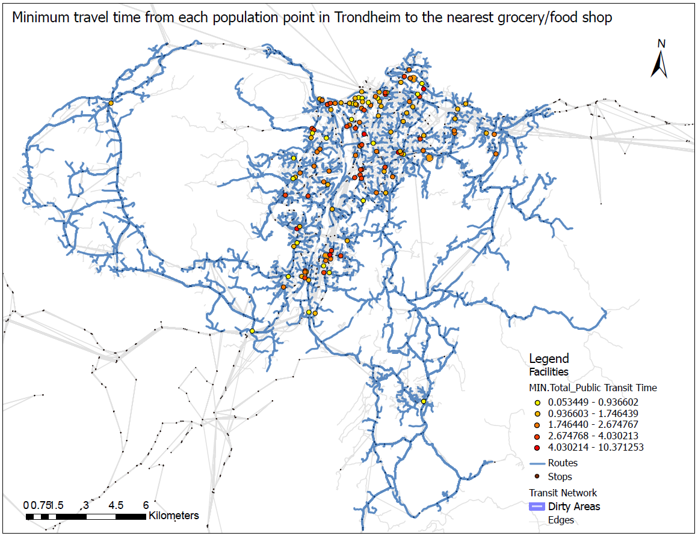

Using the public transit network dataset, Grocery/Food shops from the PT dataset, and closest facility network analysis were used to calculate the minimum travel time from each of the population points in Trondheim to a grocery or food shop.
Ved hjelp av det offentlige transittnettverksdatasettet, dagligvare-/matbutikker fra PT-datasettet og nærmeste anleggsnettverksanalyse ble brukt til å beregne minimum reisetid fra hvert av befolkningens punkter i Trondheim til en dagligvarebutikk eller matbutikk.
Grocery and food stores from the PT dataset were imported to facilities, and Pop_gridpoints2019_250 from Trondheim_region.gdb was imported to the incident by creating a new field called Pop.
Dagligvare- og matvarebutikker fra PT-datasettet ble importert til anlegg, og Pop_gridpoints2019_250 fra Trondheim_region.gdb ble importert til hendelsen ved å opprette et nytt felt kalt Pop.
ArcGIS Pro
2023
GIS Network Analysis
GIS Nettverksanalyse